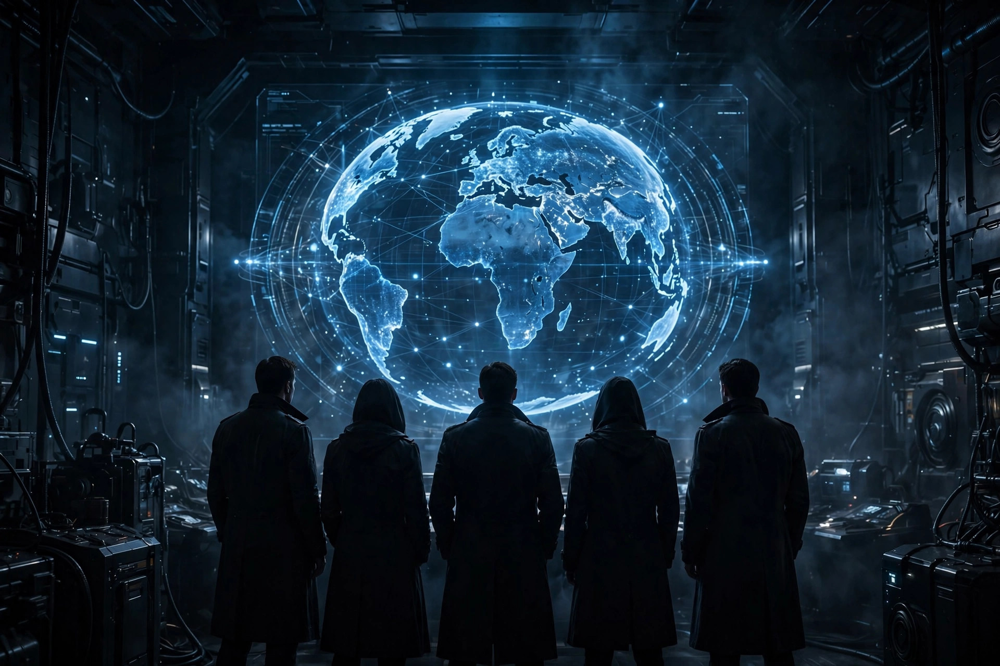

Agents of SHIELD: is it worth watching, and does it count as canon?

Every Marvel viewing guide eventually hits the same awkward question. Agents of SHIELD is the longest-running Marvel television series of its era, it launched with direct ties to the films, and it asks for more hours than every Disney+ Marvel series combined. Yet most watch orders quietly leave it out, and most canon debates end in an argument rather than an answer. This guide gives the answer in the order a viewer actually needs it: what the commitment really is, what the canon ruling means for watching (rather than for arguing), when the show demonstrably turns around according to published reviews, and a sampling plan that lets a sceptical viewer reach a fair verdict in an evening instead of a month.
The short version comes first. The show is worth watching for viewers who enjoy long-form, character-driven serial television and can tolerate a slow, uneven first stretch. It is not required homework for understanding any film, and viewers who need that guarantee before investing should skip it without guilt. Everything below is the evidence for those two sentences.
The commitment, in numbers
Start with the format, because the format is the decision. The series premiered on ABC on September 24, 2013, and concluded on August 12, 2020, with 136 episodes broadcast over seven seasons. That total is not distributed the way modern streaming seasons are. As ComicBook's retrospective on the show's run notes, it kept a 22-episode broadcast format for seasons 1 through 5, then shifted to a 13-episode format for seasons 6 and 7. Verifying that structure against the headline total is the useful exercise here: five times 22 is 110, plus two times 13 is 26, which lands exactly on the widely reported 136. The number is real, and so is what it implies — this is broadcast-era television, built for weekly viewing over most of a decade, not a weekend binge designed around a single arc.
| Block | Seasons | Episodes | Shape of the viewing |
|---|---|---|---|
| Broadcast-length run | 1–5 | 22 each, 110 total | Case-of-the-week openings that gradually serialise; long character arcs |
| Short-season run | 6–7 | 13 each, 26 total | Tighter, more self-contained seasonal stories |
| Full series | 7 | 136 | Premiered September 24, 2013; concluded August 12, 2020 |
Two consequences follow. First, judging this show by the standards of a six-episode streaming series misreads it: the extra episodes are precisely what allowed the in-depth character development ComicBook credits it with, including an ensemble that grows from functional archetypes into the main reason to keep watching. Second, the commitment is front-loaded with risk. A viewer who bails in the early going has spent hours in the show's weakest stretch and none in its strongest, which is why the sampling plan below matters more for this series than for any other in the catalogue.
Does it count as canon? The answer that matters for viewing
The canon question has a documented answer, and it is narrower than the internet argument suggests. ScreenRant's reporting on Marvel Studios' The Marvel Cinematic Universe — An Official Timeline notes that the book covers the Sacred Timeline through Phase 4 and does not cover Coulson's resurrection or his team at all. The same reporting describes the foreword by Kevin Feige as acknowledging that some stories are canonical to Marvel while having been created by different storytellers during different periods of the studio's history, with the book itself specific to the Sacred Timeline. ComicBook's account of the show's history supplies the production reason this happened: the series was developed by Marvel Television independently of Marvel Studios, its early seasons tied tightly to the films, and its later seasons operated increasingly on their own.
Translated into a viewing rule, that is genuinely simple. Nothing in the films requires this series, and nothing in this series is required by the films. Early episodes do connect — ScreenRant's reappraisal lists references to Avengers: Age of Ultron and Thor: The Dark World and guest appearances by film characters including Nick Fury and Lady Sif — but the connections run one way, as enrichment rather than obligation. So the correct reason to watch is the show itself: its team, its villains, and its long arcs. A viewer who starts it as homework will resent it; a viewer who starts it as a self-contained spy series with Marvel seasoning is watching the thing it actually became. That reframing, not the canon label, is what decides whether the 136 episodes feel like a burden or a bargain.
When it gets good, according to the reviews
The slow start is not a fan myth; it is in the contemporary record. Collider's second-chance assessment describes a first season that drew mixed reception from fans and critics alike — fans expecting more tangible connections to the films, critics wanting more tension from a spy thriller — before gaining a small but loyal fanbase across its run. The same piece identifies the turning point precisely: the final six episodes of season 1 dovetailed with the events of Captain America: The Winter Soldier, and the revelation that Hydra had infiltrated SHIELD — the premise of that 2014 film, flagged here because discussing the turnaround at all requires naming it — was the creative refresh the series needed, freeing it to build its own narrative instead of waiting on the movies.
The AV Club's retrospective on season 1 sharpens the milestone further. It describes the fall of SHIELD leading to some of the best episodes of the entire run, beginning with an episode titled “End of the Beginning” and continuing as an intense seven-episode sprint to the finale, with episode 17, “Turn, Turn, Turn,” singled out as a breakthrough for the show. Later reappraisals have been kinder still: ScreenRant argues the series was underappreciated in its time and that holding its standard across five 22-episode seasons and two shorter ones looks more impressive now than it did while airing. Reviews across all seven seasons were, as the series' reference record summarises, consistently positive even as broadcast ratings declined after a high-rated start — a combination that usually means a show found its audience slowly rather than losing one it deserved to keep.
A fair test: how to sample it
Because the weakest and strongest material sit far apart, “watch the pilot and decide” is a badly designed test for this specific show. A fairer procedure:
- Watch episodes 1 to 3. Success at this stage is modest: the team, the tone, and the case-of-the-week format either hold attention or they do not. Do not judge the series here — judge only whether the characters are tolerable company.
- Continue in order, but set the checkpoint at episode 17. The documented turnaround lives in the final stretch of season 1, so the honest test is whether the sprint beginning around “End of the Beginning” changes the verdict.
- Apply the two-question check at episode 17. Is the serialised story now the reason to press play, and is at least one team relationship worth following? Two yeses mean continue in order. Two noes are a legitimate final verdict — the show's later strengths build on exactly those two things.
What success looks like: a viewer who reaches the checkpoint and starts choosing the next episode over other options without needing the films to justify it. That is the show working as designed. What failure looks like is equally clear, and it is not a failure of the viewer: some audiences simply do not want broadcast-era pacing, and no later twist retroactively fixes that preference.
Who should watch it, who should skip it
Watch it if: long character arcs are the appeal — Collider's assessment singles out the development of Coulson from agent to leader and the show's central slow-burn relationship as genuine strengths that only a long run could build. Watch it if: a spy-team procedural with escalating serialisation sounds like a good few months of evening viewing, and a slow first half-season is an acceptable price. Skip it if: the goal is completing the film storyline — the timeline-book answer above means there is nothing to complete here. Skip it if: only a tight, modern six-to-nine-episode season fits the available time; the shortest-Marvel-series shelf serves that need better. And defer it if: the plan was to watch “for canon” — reframe it as its own continuity first, and start it only when that sounds appealing rather than disappointing.
Frequently asked questions
How many episodes is Agents of SHIELD? 136 episodes across seven seasons: 22 episodes in each of seasons 1 to 5 and 13 in each of seasons 6 and 7, broadcast from September 24, 2013 to August 12, 2020. Is it canon? Marvel Studios' official timeline book does not include it in the Sacred Timeline, while acknowledging Marvel-canonical stories from other storytellers and periods; treat it as its own continuity and nothing is lost. When does it get good? Published retrospectives converge on late season 1: the final six episodes tie into Captain America: The Winter Soldier, and the AV Club names episode 17, “Turn, Turn, Turn,” as the breakthrough. Do the films need to be watched first? Only The Avengers, for Coulson's introduction, is close to essential; the early film references reward familiarity but the series explains its own stakes.
Sources, accessed October 16, 2026: Wikipedia, “Agents of S.H.I.E.L.D.”; Collider, “Marvel's Forgotten 136-Episode Series Officially Deserves a Second Chance”; ComicBook, “5 Lessons the MCU Needs to Learn from the Only Marvel TV Show to Get 7 Seasons”; ScreenRant, “Agents of SHIELD MCU Canon Status Finally Answered” and “Agents of SHIELD Has Aged Like Fine Wine”; The AV Club, season 1 retrospective. Review opinions are those publications'. This is an unofficial fan guide and is not affiliated with Marvel or Disney; check Disney+ for current availability.